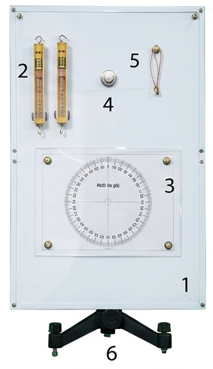
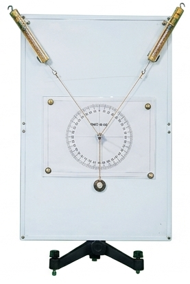
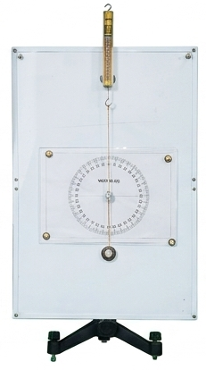
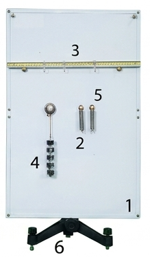
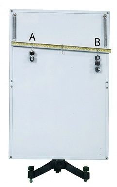
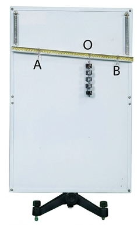
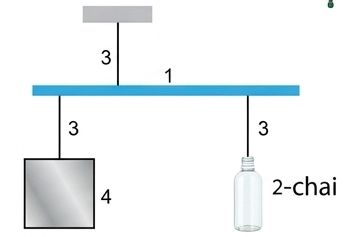

"Hai lực \(\vec{F}_{1}\) và \(\vec{F}_{2}\) tác dụng lên một vật. Làm thế nào xác định hợp lực của hai lực này bằng dụng cụ thí nghiệm?"

Nhiệm vụ: Xác định lực tổng hợp của hai lực đồng quy.
Cách bố trí ban đầu: Gắn đế nam châm lên bảng thép, móc sợi dây cao su vào đế nam châm, đặt hai lực kế lên bảng thép và móc hai lực kế vào đầu còn lại của dây cao su. Dịch chuyển hai lực kế để kéo sợi dây cao su làm dây dãn ra một khoảng.
Làm thế nào để hai lực \(\vec{F}_{1}\) và \(\vec{F}_{2}\) đồng quy?
Làm thế nào thay thế tác dụng của hai lực \(\vec{F}_{1}\) và \(\vec{F}_{2}\) bằng một lực \(\vec{F}\) mà dây cao su vẫn dãn một đoạn và hướng như ban đầu?
Làm thế nào xác định lực tổng hợp của hai lực \(\vec{F}_{1}\) và \(\vec{F}_{2}\)?


Các bước tiến hành chi tiết:
| Lần đo | \(F_{1}\) (N) | \(F_{2}\) (N) | Góc \(\alpha\) (độ) | \(F_{tn}\) (N) | \(F_{lt}\) (N) |
|---|---|---|---|---|---|
| 1 | 2,0 | 3,0 | \(60^\circ\) | 4,3 | 4,36 |
| 2 | 2,0 | 3,0 | \(90^\circ\) | 3,5 | 3,61 |
| 3 | 2,0 | 3,0 | \(120^\circ\) | 2,6 | 2,65 |
Xử lý kết quả thí nghiệm mẫu:
Sai số giữa kết quả lý thuyết và thực nghiệm thường dao động nhỏ (khoảng 2% - 5%) chủ yếu do ma sát của sợi chỉ với mặt thước, sai số dụng cụ lực kế và thao tác đọc góc bằng mắt thường. Kết quả thực nghiệm hoàn toàn chứng minh tính đúng đắn của quy tắc hình bình hành.

Nhiệm vụ: Xác định lực tổng hợp của hai lực song song cùng chiều.
Thao tác ban đầu: Treo thanh kim loại lên 2 lò xo được định vị trên bảng sắt bằng các nam châm. Treo các quả nặng khác nhau vào hai đầu thanh tại điểm A và B, khiến các lò xo dãn ra làm dịch chuyển vị trí của thanh kim loại.
Làm thế nào thay thế hai lực \(\vec{F}_{1}\) và \(\vec{F}_{2}\) bằng một lực \(\vec{F}\) mà thanh vẫn ở vị trí như ban đầu?
Làm thế nào để hai lực \(\vec{F}\) và \(\vec{F}_{3}\) song song?


Các bước thí nghiệm cụ thể:
| Lần đo | \(F_{1}\) (N) | \(F_{2}\) (N) | \(AB\) (cm) | \(F\) (N) | \(OA_{tn}\) (cm) | \(OA_{lt}\) (cm) |
|---|---|---|---|---|---|---|
| 1 | 1,5 | 0,5 | 24,0 | 2,0 | 5,9 | 6,0 |
| 2 | 1,0 | 1,0 | 24,0 | 2,0 | 11,8 | 12,0 |
| 3 | 1,0 | 1,5 | 20,0 | 2,5 | 11,9 | 12,0 |
Xử lý kết quả thí nghiệm mẫu:
Sai số khoảng cách giữa tính toán lý thuyết và đo đạc thực tế dao động rất nhỏ trong giới hạn cho phép (\(< 2\text{ mm}\)), do đó nghiệm lại hoàn hảo quy tắc chia trong của hai lực song song cùng chiều: \[\frac{F_1}{F_2} = \frac{d_2}{d_1}\]
Biết cách tiến hành và tự lắp ráp bố trí hệ thống thí nghiệm để tổng hợp hai lực đồng quy cũng như tổng hợp hai lực song song cùng chiều. Từ đó thực nghiệm kiểm chứng và khắc sâu bản chất các quy tắc hợp lực trong cơ học.
Chế tạo một chiếc cân thăng bằng cực kỳ đơn giản bằng các vật liệu dễ kiếm tại nhà như hình dưới:

Hình 22.5. Sơ đồ chế tạo cân đòn bẩy đơn giảnĐòn bẩy là một trong những loại máy cơ đơn giản được con người ứng dụng sớm nhất và rộng rãi nhất từ thời cổ đại cho đến nay. Bản chất hoạt động của đòn bẩy chính là dựa trên quy tắc cân bằng lực và quy tắc tổng hợp hai lực song song ngược chiều/cùng chiều. Các ví dụ điển hình có thể thấy ngay trong đời sống hàng ngày: chiếc xà beng để cậy đất đá, chiếc bập bênh ở công viên, hay chiếc đòn gánh truyền thống giúp san sẻ sức nặng một cách thông minh của người dân lao động Việt Nam.
Bài tập 1:
Một vật chịu tác dụng của hai lực đồng quy đồng phẳng có độ lớn lần lượt là \(F_1 = 30\text{ N}\) và \(F_2 = 40\text{ N}\). Biết góc hợp giữa hai lực là \(\alpha = 90^\circ\). Tính độ lớn của hợp lực tác dụng lên vật.
Bài tập 2:
Một tấm ván gỗ nhẹ, cứng bắc ngang làm chiếc bập bênh cho hai em bé. Bé A nặng \(30\text{ kg}\) ngồi tại một đầu ván, cách điểm tựa trục quay \(O\) một đoạn \(1,2\text{ m}\). Bé B phải ngồi cách điểm tựa bao nhiêu để bập bênh ở trạng thái thăng bằng nằm ngang? Biết khối lượng của bé B là \(20\text{ kg}\) và lấy \(g = 10\text{ m/s}^2\).
Bài tập 3:
Hai người khiêng một vật nặng khối lượng \(50\text{ kg}\) bằng một đòn gánh nhẹ dài \(1,5\text{ m}\). Điểm treo vật cách vai người thứ nhất một khoảng \(0,6\text{ m}\). Hãy tính xem vai của mỗi người phải chịu một lực tác dụng bằng bao nhiêu? Lấy \(g = 10\text{ m/s}^2\).